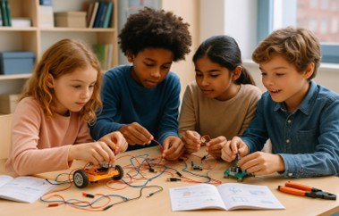
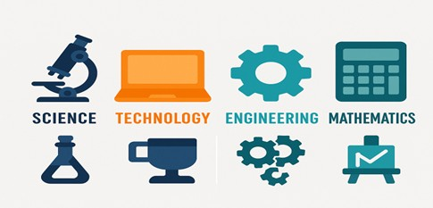
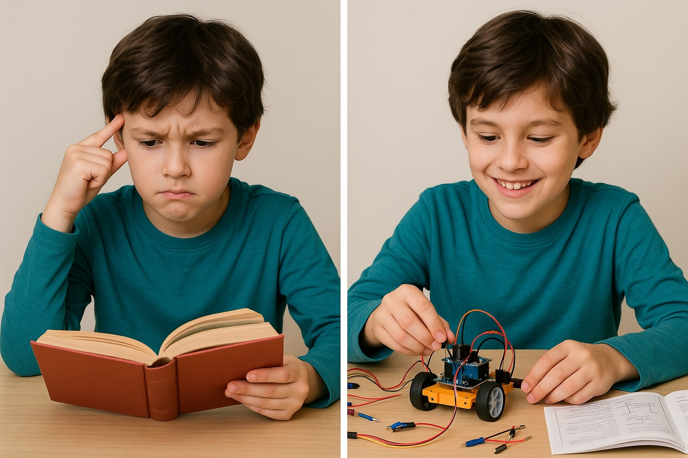
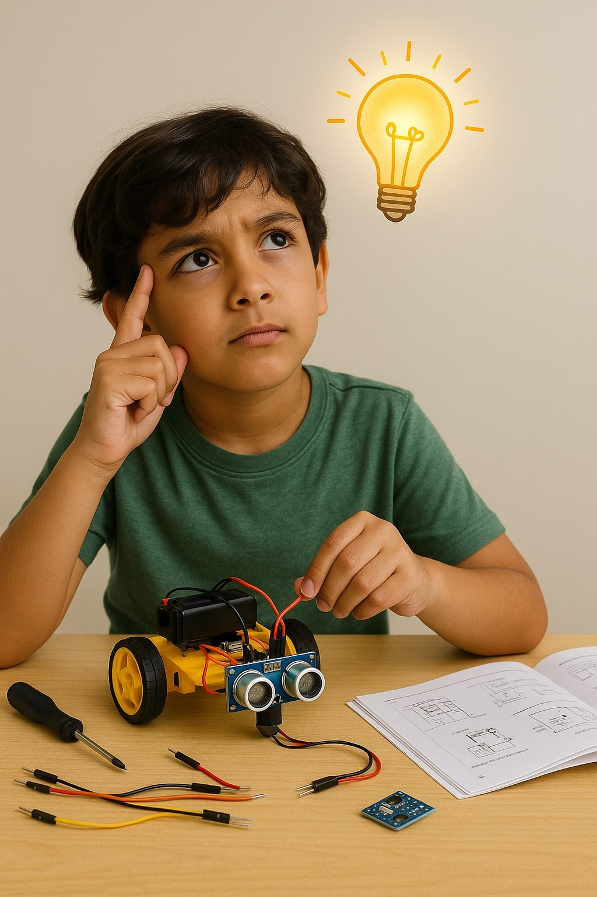
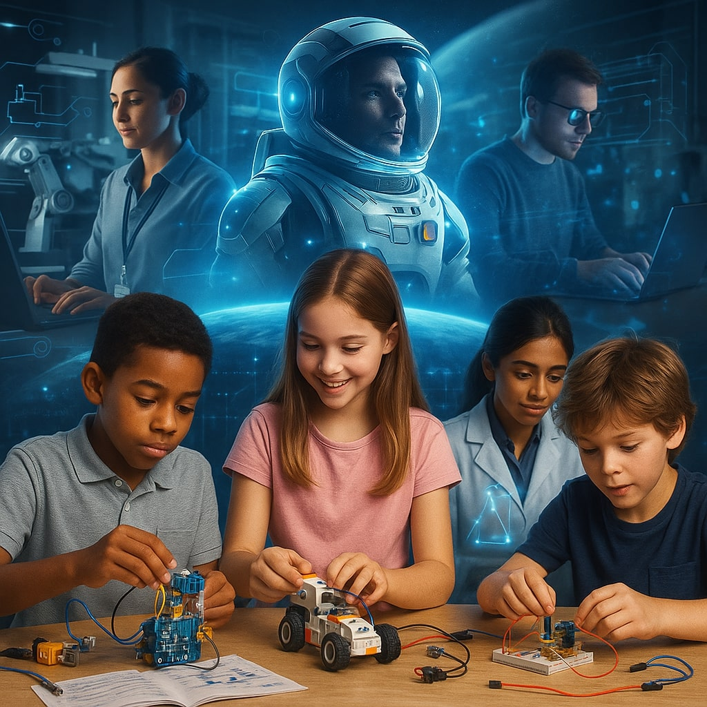

WHY STEM KITS ARE REVOLUTIONARY?

In today’s fast-changing world, it’s more important than ever to equip kids with the skills they’ll need not just to succeed — but to thrive. Critical thinking, creativity, problem-solving, and technological literacy are no longer optional; they’re essential. That’s where STEM comes in.
But what exactly are STEM kits — and why are so many parents, educators, and innovators turning to them as a core part of modern learning?
Let’s break it down.
First, What is STEM?
STEM stands for Science, Technology, Engineering, and Mathematics — a combination of subjects that form the backbone of innovation in today’s world. These aren’t just school subjects; they’re ways of thinking.

STEM helps kids:
- Understand how the world around them works
- Solve real-world problems
- Build skills in logic, analysis, and experimentation
- Develop confidence in creating, testing, and improving ideas
So, What Exactly is a STEM Kit?
A STEM kit is a hands-on learning tool designed to help children (and even adults) explore STEM concepts in a tangible, interactive way. Think of it as a mini lab or workshop in a box.

STEM kits can come in many forms:
- Electronics sets with wires, batteries, and sensors
- Engineering kits that involve building machines or models
- Coding kits that teach children how to program actions or solve logic puzzles
- Science kits that include experiments with chemistry, physics, or biology
- Robotics kits that combine mechanics and coding in exciting ways
Why Hands-On Matters
Children learn best when they’re engaged. And nothing engages a child like building something with their own two hands.

STEM kits promote active learning, where kids:
- Explore materials and concepts independently
- Make mistakes and learn through trial and error
- Solve problems creatively
- Apply what they’ve learned in new and meaningful ways
More Than Just Toys

The best STEM kits are:
- Curriculum-aligned – introducing key STEM concepts in a structured way
- Open-ended – allowing kids to modify, improve, or expand on the original design
- Age-appropriate – challenging, but not overwhelming
- Skill-building – encouraging development in problem-solving, critical thinking, and collaboration
What Skills Do STEM Kits Help Develop?
STEM kits help kids:
- Think logically – through step-by-step problem solving
- Experiment bravely – accepting that failure is part of the process
- Work independently – taking charge of their own learning
- Collaborate effectively – when working on challenges with peers or siblings
- Use technology wisely – not just consuming it, but creating with it
Not All STEM Kits Are Created Equal
A STEM kit is more than just a quick activity. It is a launchpad for curiosity, growth, and capability.
Are STEM Kits Right for My Child?
STEM kits can:

- Boost academic performance in science and math
- Improve attention span, focus and perseverance
- Unlock creative potential
- Foster a genuine love of learning
Conclusion: A Simple Kit, A Powerful Experience
A STEM kit might just look like a box of parts — wires, sensors, cardboard, instructions. But in the hands of a curious child, it becomes something much bigger: a tool for exploration, a test of ideas, a gateway to future possibilities.
So the next time your child asks “how does this work?” — don’t just tell them. Let them build it. Let them try. Let them find out.
It’s not just about building powerful machines, it’s a journey towards building powerful mindsets!